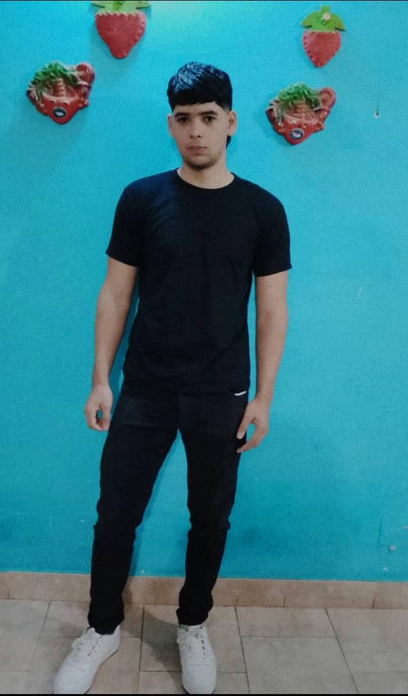

hoja de vida

Biografía
Nombre: YETSAIEL ESAU VEGAS LIEDRO
Fecha de Nacimiento: 4 de abril de 2006
Lugar de Nacimiento: Tucupita, Delta Amacuro, Venezuela
Infancia y Educación
Nací en la cálida y biodiversa tierra del Delta Amacuro, en la ciudad de Tucupita, un lugar lleno de cultura y tradiciones arraigadas en el río Orinoco. Mis primeros pasos en la educación los di en el Preescolar Alejandro Petión, donde comenzó mi curiosidad por el aprendizaje.
Posteriormente, continué mi formación académica desde primero hasta quinto año de bachillerato, culminando con éxito mis estudios en 2023 y obteniendo el título de Bachiller. Durante esta etapa, desarrollé interés por [menciona algún área que te gustara, como ciencias, humanidades, deportes, etc.].
Educación Universitaria
Con determinación por seguir creciendo, decidí ingresar a la Universidad Territorial Deltáica "Francisco Tamayo" (UTDFT), donde actualmente curso [indica la carrera que estudias]. Esta institución me ha permitido ampliar mis conocimientos y prepararme para contribuir al desarrollo de mi región y del país.
Intereses y Aspiraciones
Soy una persona [describe brevemente tu personalidad: ej. "dedicada, perseverante y con ganas de superación"]. Entre mis metas está [menciona algún objetivo profesional o personal, como "especializarme en mi campo de estudio", "apoyar a mi comunidad", o "emprender un proyecto relacionado con..."].
Reflexión Personal
"Vivir en el Delta Amacuro me ha enseñado la importancia de la resiliencia y la adaptabilidad. Cada logro académico es un paso hacia un futuro donde pueda aportar soluciones a los desafíos de mi entorno".
elementos
g
EL MEJOR JUDADOR DE COD
sisa baje a rosel y djmaikol
ir a Google
- Elemento 1
- Elemento 2
- Elemento 3